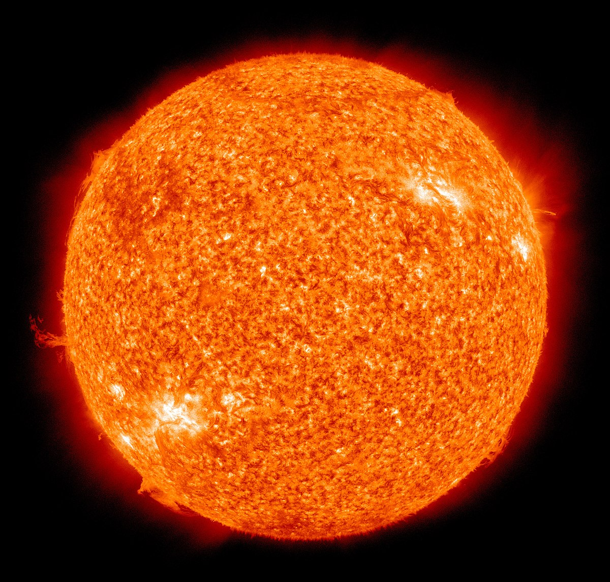
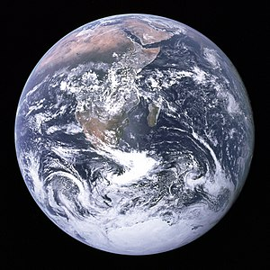

O sistema solar
Um sistema planetário é um conjunto de corpos celéstes não estelares que orbitam uma estrela ou um sistema de estrelas, o nosso sistema planetário se chama
sistema solar
e é composto pelos seguintes:
Estrela central:

Planetas:

Nota: cada imagem leva a um link esplicativo sobre cada planeta
Obrigado por visitar a pagina!!!
Alguns links interessantes sobre o
universo
!!
>>
Foto astronomica do dia
<<
>>
Quantas pessoas estão no espaço?
<<
>>
Estrelas e mais estrelas
<<
>>
Spooooky
<<